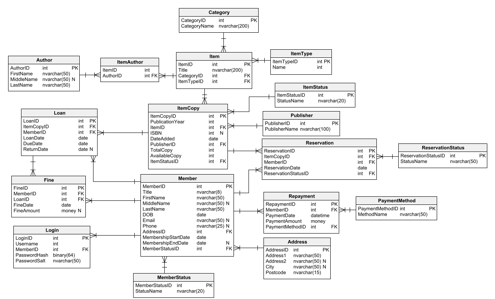

Predictive Maintenance Using MLIB on Databricks
In this project, the Databricks platform was strategically employed to facilitate the training of a predictive model for a manufacturing company. The primary objective was to leverage vibration sensor data to monitor machinery within their production line and accurately classify instances of potential faults. Notably, the developed predictive model achieved a commendable accuracy rate of 96%.
To enhance the model's performance, a systematic approach was adopted, involving multiple runs with distinct hyperparameter configurations. Four prominent classification algorithms were implemented and evaluated for their efficacy in this context. These algorithms encompassed Decision Tree, Support Vector, Logistic Regression Machine, GBT Classifier, and Random Forest Classifiers.
This comprehensive exploration of hyperparameter variations and algorithmic choices underscores the meticulous methodology applied in crafting a robust and accurate predictive model tailored to the unique needs of the manufacturing company.
Library Management system using T-SQL

This project encompasses the meticulous design and development of a robust standard library database system, meticulously crafted using T-SQL on the Microsoft SQL Server platform. The endeavor includes the creation and optimization of a diverse array of essential database objects, such as stored procedures, user-defined functions, views, and triggers.
The core focus is on architecting a sophisticated and highly functional database system that not only adheres to industry standards but also seamlessly aligns with the specific requirements of the intended use case. The implementation of T-SQL, a powerful and feature-rich extension of SQL tailored for Microsoft SQL Server, ensures the efficiency and effectiveness of the database operations.
Analysis of Clinical Trials using PySpark RDD, Dataframes and SparkSQL on Databricks
This project centers around a comprehensive analysis of a dataset comprising clinical trials conducted over a three-year period. The analysis is complemented by an examination of pharmaceutical violations attributed to a specified list of pharmaceutical companies. Three distinct implementations were undertaken to ensure a thorough exploration of the data: Data Frame, Spark SQL, and Resilient Distributed Datasets (RDD). Furthermore, the project incorporates visualizations to effectively communicate and interpret the results derived from these diverse analytical approaches.
Analysis of an Excerpt from the NHS Prescription Database
Within the confines of this project, a meticulous analysis unfolded, encompassing three distinct datasets. The primary objective was to delve into prescribing data, unraveling insights into the intricacies of medication usage. The examination centered around comprehending the types of medication being prescribed, the entities orchestrating these prescriptions, and the corresponding quantities prescribed. A particular emphasis was placed on honing in on Bolton, affording a granular understanding of prescription dynamics within this specific geographical context.
Amazon Web Scraper With Python

In this comprehensive project, we aim to develop a powerful Amazon web scraper using Python, leveraging popular libraries such as Beautiful Soup and Requests. The project's primary objective is to extract valuable product information, including prices, ratings, reviews, and other relevant details from Amazon's extensive online marketplace. To achieve this, we will employ web scraping techniques to navigate through product pages, extract structured data, and organize it in a format conducive to further analysis or integration into other applications.
The project workflow will involve crafting a Python script that utilizes Requests to send HTTP requests to Amazon's servers, simulating the behavior of a web browser. Subsequently, Beautiful Soup will be employed to parse the HTML content of the retrieved pages, allowing us to extract specific elements like product names, prices, and customer reviews. The scraper will be designed to navigate through paginated results, ensuring comprehensive coverage of product listings. Additionally, error handling mechanisms and rate-limiting strategies will be implemented to ensure the scraper's reliability and compliance with Amazon's terms of service. Overall, this Amazon web scraper project aims to provide a versatile tool for extracting valuable insights from Amazon's vast product catalog, showcasing the capabilities of Python for web scraping applications.